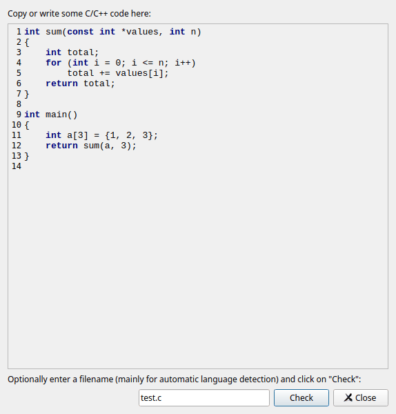
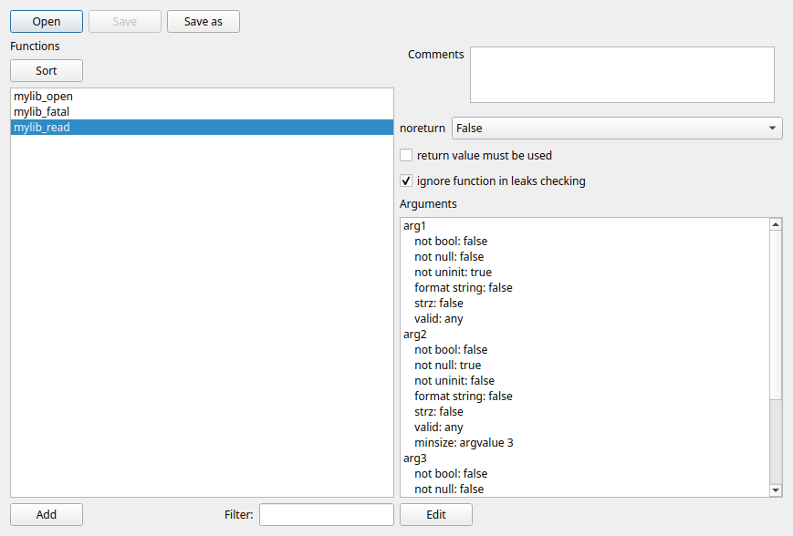

The scratchpad lets you analyze a piece of code without saving it in a file. Use it to try out how Cppcheck handles some code, to reduce a false warning to a small example before you report it, or to check a code snippet from a review.
Open it with View > Show Scratchpad....

test.c is analyzed as C and test.cpp as C++. If
you leave it empty, the code is analyzed as C++.The results are shown in the results list of the main window, and they replace the results that were shown before. The code is analyzed with the settings of the open project, or with the settings of the Analyze menu if no project is open. The code can not include your own headers, since it is not stored in a file.
The scratchpad keeps its text while the GUI is running, so you can change the code and click Check again.
A library configuration file (.cfg) tells Cppcheck how the
functions of a library behave. Cppcheck comes with configurations for many
libraries (see Libraries). For
your own libraries, or libraries that have no configuration, you can write one
yourself. The library editor helps you with the function part of the
configuration.
Open it with View > Library Editor....

Click Open to load an existing .cfg file, Save
to save your changes and Save as to save to a new file. To start a new
configuration, add functions and click Save as.
Save your configuration in the folder of your project file. It then appears in the Libraries list on the Types and Functions tab of the project dialog, where you can select it.
The editor only shows the functions of a configuration. Other parts of the file, such as memory and resource allocation functions, defines and types, are kept when you save. If a file contains elements that the editor does not know, it can not be opened in the editor; use a text editor for such files.
The list on the left shows the functions of the configuration. Type in Filter to show only functions whose names contain the text. Click Sort to sort the list by name.
Click Add to add a function. Enter the function name and the number of arguments. If several functions have the same properties, you can enter their names separated by commas; they then share one entry.
Select a function to see and change its properties:
| Property | Meaning |
|---|---|
| Comments | Your notes about the function. They are saved as an XML comment before the function in the file. |
| noreturn | True if the function never returns, like
exit() or a fatal error handler. Then Cppcheck knows that the
code after a call is not reached. False if it always returns.
Unknown if it depends. |
| return value must be used | Warn if the return value is ignored, for example for functions that return an error code or a new object. |
| ignore function in leaks checking | The function does not take ownership of a pointer that is passed to it. Without this, Cppcheck may assume that the function frees or stores the memory, and stop tracking a possible leak. |
| Arguments | The properties of each argument. Select an argument and click Edit to change them. |
| Property | Meaning |
|---|---|
| Not bool | A boolean value (for example the result of a comparison) is wrong for this argument. Typical for pointers and sizes. |
| Not null | A null pointer must not be passed. |
| Not uninit | The value must be initialized. For pointers this means the data it points at is read by the function. |
| String | The argument must be a zero terminated string. |
| Format string | The argument is a printf style format string; the following arguments are checked against it. |
| Min size of buffer | The minimum size of the buffer that is
passed. argvalue: the value of another argument (for example the
size argument of memset); mul: the product of two
arguments; strlen: the length of a string argument. |
| Valid values | The values that are allowed, for example
0: (zero or more), 1:255 or
0,2:5. Cppcheck warns if another value can be passed. |
For all features of the configuration format, see the Cppcheck manual and
the files in the cfg folder of the Cppcheck installation. You can
edit .cfg files in a text editor too.
To find which functions in your code are not configured yet, use Analyze > Reanalyze and check library; see Checking the library configuration.
View > Thread Details shows what each analysis thread is doing: the file it analyzes, when it started on the file and how far it has come. Use it to find files that take a long time to analyze. If one file takes very long, you can for example exclude it, reduce the number of configurations with undefines, or use a lower check level.
The number of threads is set in the preferences.